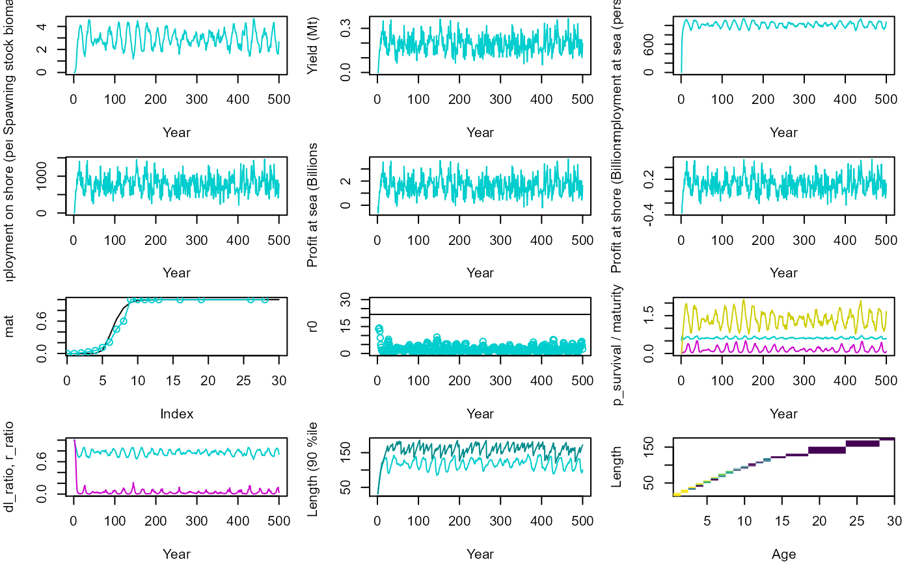
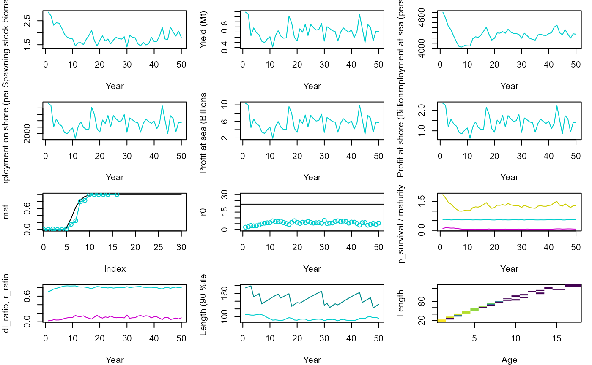
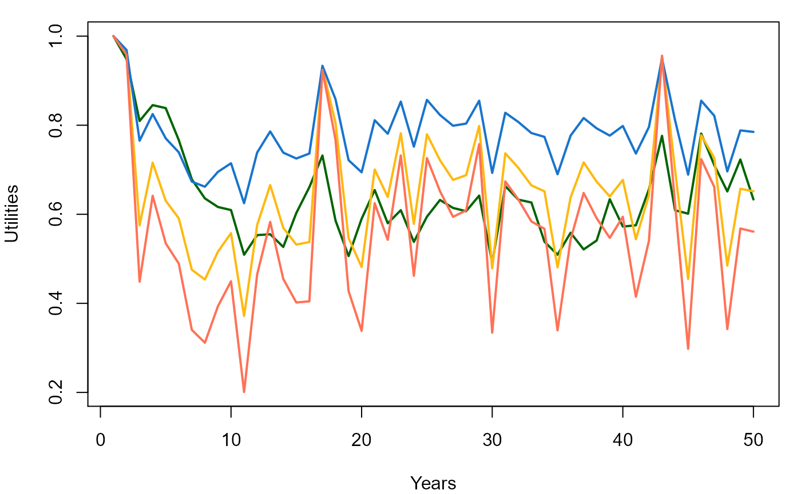
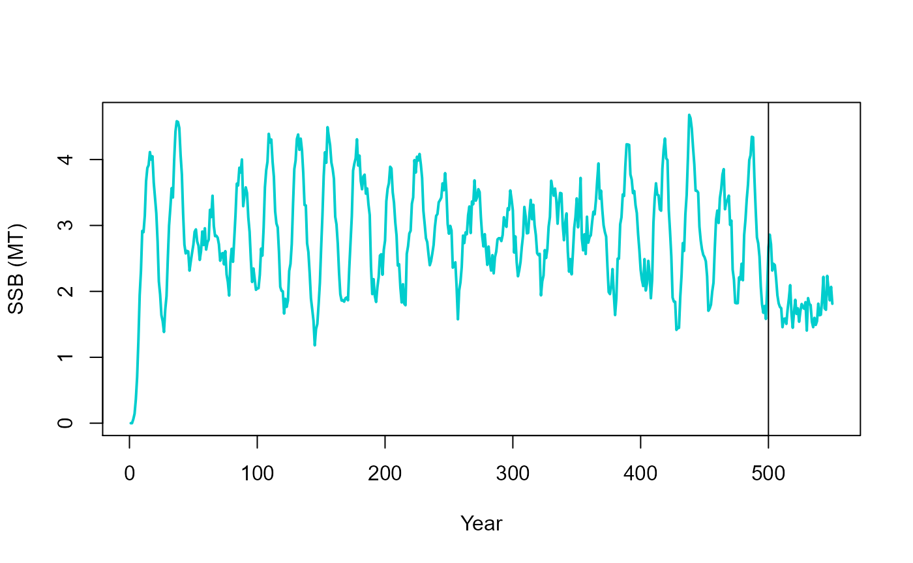
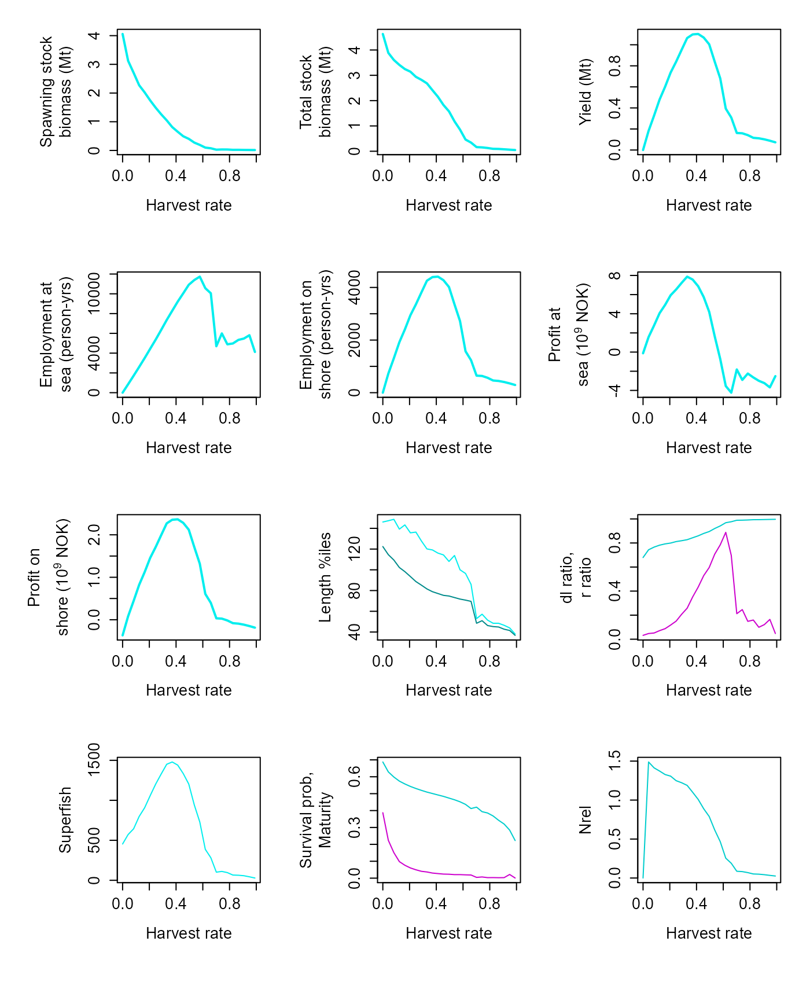
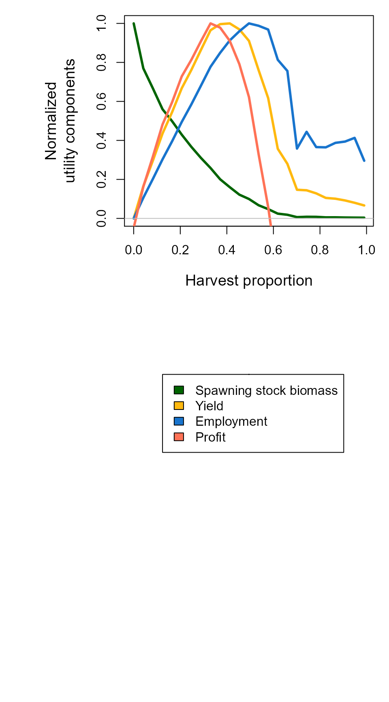
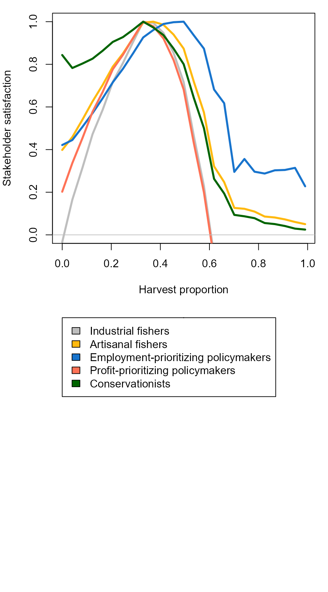
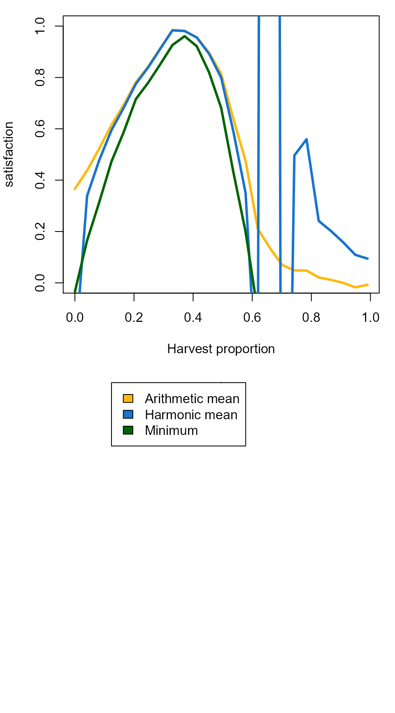

Safe operating spaces
Jaideep Joshi
28 March 2022
jss_calcs_h.Rmd
re_simulate = T
# if one of the files doesnt exist, re-run the simulations
re_simulate = re_simulate | !file.exists("res_ibm_jss_h.Rdata")
params_file = "../params/cod_params.ini"Simulating the fishery with socioeconomic outputs
The socio-economic part of the fishery deals with the calculation of realized fishing effort for a desired harvest rate, the resulting employment at sea and on shore, and the profit from operating the fishery.
The effort calculations need require the equilibrium fishable biomass
of an equivalent unfished population. To simplify such these
simulations, fisheRy provides a Simulator which can not
only precompute the properties of such a hypothetical unfished
population, but also allows simulating multiple populations under
different management regimes.
We start with creating a protoype fish as usual,
# Create a prototype fish as usual
fish = new(Fish, params_file)Then we create a simulator and run the equivalent unfished population to equilibrium.
sim = new(Simulator, fish)
sim$equilibriateNaturalPopulation(1.93e3, 5.61, 5e6)## [1] 3.503432e+09 0.000000e+00 0.000000e+00 -4.925584e+08 0.000000e+00
## [6] 0.000000e+00 -1.249998e+08 -3.675586e+08 3.263406e+09 1.034922e+00
## [11] 4.764779e+08 5.500000e+07 2.230000e+02 7.778826e-01 1.024067e-02
## [16] 1.610182e+02 1.528061e+02 5.724618e-01 1.681818e-01 0.000000e+00
plot_timeseries = function(res_ibm, pop, h, nsteps=200){
d = pop$get_state()
table(d$age)
par(mfrow = c(4,3), mar=c(4,4,1,1))
plot(y=res_ibm$ssb/1e9, x=seq(1,nsteps,1), ylab="Spawning stock biomass (Mt)", xlab="Year", col="cyan3", type="l")
plot(y=res_ibm$yield/1e9, x=seq(1,nsteps,1), ylab="Yield (Mt)", xlab="Year", col="cyan3", type="l")
plot(y=res_ibm$employment.sea, x=seq(1,nsteps,1), ylab="Employment at sea (person-years)", xlab="Year", col="cyan3", type="l")
plot(y=res_ibm$employment.shore, x=seq(1,nsteps,1), ylab="Employment on shore (person-years)", xlab="Year", col="cyan3", type="l")
plot(y=res_ibm$profit.sea/1e9, x=seq(1,nsteps,1), ylab="Profit at sea (Billions NOK)", xlab="Year", col="cyan3", type="l")
plot(y=res_ibm$profit.shore/1e9, x=seq(1,nsteps,1), ylab="Profit at shore (Billions NOK)", xlab="Year", col="cyan3", type="l")
d = pop$get_state()
d1 = d %>% group_by(age) %>% summarize(mat = length(which(isMature))/length(isMature))
plot(mat, type="l")
points(d1$mat~I(d1$age-1), type="o", col="cyan3") # Decrement age to get the right maturation prob (see note above)
plot(res_ibm$r0~seq(1,nsteps,1), xlab="Year", ylab= "r0", col="cyan3", type="p", ylim=c(0,30))
abline(h=21.77, col="black")
matplot(y=cbind(res_ibm$survival_mean, res_ibm$maturity, res_ibm$Nrel), x=seq(1,nsteps,1), xlab="Year", ylab= "p_survival / maturity / Nrel", col=c("cyan3", "magenta3", "yellow3"), type="l", lty=1)
matplot(y=cbind(res_ibm$factor_dg, res_ibm$factor_dr), x=seq(1,nsteps,1), xlab="Year", ylab= "dl_ratio, r_ratio", col=c("cyan3", "magenta3"), type="l", lty=1)
matplot(y=cbind(res_ibm$length90, res_ibm$max_length), x=seq(1,nsteps,1), xlab="Year", ylab= "Length (90 %ile)", col=c("cyan3", "cyan4"), type="l", lty=1)
dist = table(d$age, d$length)
image(x=as.numeric(rownames(dist)), y = as.numeric(colnames(dist)), z=log(1+3*log(dist)), col=scales::viridis_pal()(100), xlab="Age", ylab="Length")
}Then, we create the fished population and simulate it for 500 years with a status quo management regime with \(h = 0.41\), \(L50 = 45\), \(T = 5.6\).
We can also plot biological and socioeconomic parameters as a function of time.
pop_sq = new(Population, fish)
pop_sq$set_superFishSize(5e6)
h_sq = 0.05
lf_sq = 45
t_sq = 5.6
nsteps_sq = 500
res_ibm_sq = sim$simulate(pop_sq, lf_sq, h_sq, nsteps_sq, 1.93e3, t_sq, T)
plot_timeseries(res_ibm_sq, pop_sq, h_sq, nsteps_sq)## Warning in log(1 + 3 * log(dist)): NaNs produced
We can continue to simulate this population under different management conditions, e.g., here with a higher harvest proportion of 0.2.
nsteps = 50
h = 0.2
lf = 45
pop1 = pop_sq ## NO! This creates a shallow copy, so pop_sq will also be modified.
res_ibm = sim$simulate(pop1, lf, h, nsteps, 1.93e3, 5.61, F)
plot_timeseries(res_ibm, pop1, h, nsteps)## Warning in log(1 + 3 * log(dist)): NaNs produced
utils = cbind(res_ibm$ssb/max(res_ibm$ssb), res_ibm$yield/max(res_ibm$yield), res_ibm$employment/max(res_ibm$employment), res_ibm$profit/max(res_ibm$profit))
par(mfrow=c(1,1), mar=c(4,4,1,1))
matplot(y=utils, x=1:50, xlab="Years", ylab="Utilities", col=c("darkgreen", "darkgoldenrod1", "dodgerblue3", "coral1"), lty=1, lwd=2, type="l")
Thus, we can plot the two populations together:
plot(y=c(res_ibm_sq$ssb, res_ibm$ssb)/1e9, x=seq(1,550), type="l", col="cyan3", xlab="Year", ylab="SSB (MT)", lwd=2)
abline(v=500)
Multiple populations
Computing JSS requires that we analyze the population’s response to
different management regimes. Here, we simulate 25 populations for 50
years under different harvesting regimes (specified by the
hvec vector). Each population starts from an equilibrium
under the same status quo management regime with \(h=0.41\), \(L_{min}=45\), and \(T=5.61\).
The simulate_multi_2d function returns an array of
dimensions
{nsteps, length(hvec), length(lmin_vec), length(Tvec), 4}.
The last dimension is four because four utilities are returned: {ssb,
yield, employment, profit}.
source("../R/plot_scan.R")
# Recreate status quo population because the earlier one was modified
pop_sq = new(Population, fish)
pop_sq$set_superFishSize(5e6)
h_sq = 0.41
lf_sq = 45
t_sq = 5.6
nsteps_sq = 500
res_ibm_sq = sim$simulate(pop_sq, lf_sq, h_sq, nsteps_sq, 1.93e3, t_sq, T)
nsteps=50
hvec = seq(0., 0.99, length.out=25)
pop = pop_sq
if (re_simulate){
pop$set_superFishSize(5e6)
res_ibm_full = sim$simulate_multi_2d(pop, c(5.6), lf, hvec, nsteps, 1.93e3, F)
save(res_ibm_full, file = "res_ibm_jss_h.Rdata")
} else{
load("res_ibm_jss_h.Rdata")
}
arr = res_ibm_full
names = pop$colnames
dat_ibm = data.frame(matrix(ncol=length(names), nrow=0))
colnames(dat_ibm) = names
for (i in 1:length(hvec)){
v_ibm = colMeans(arr[, i, 1, 1,])
dat_ibm[nrow(dat_ibm)+1,] = v_ibm
}
plot_scan(dat_ibm, xname = "Harvest rate", xvec = hvec)
Utilties
We can calculate normalized utility components from the timeseries of bio-socio-economic parameters. This timeseries of 50 years includes a transient phase when the population is responding to the altered management regime, and possibly an equilibrium phase when the population equilibriates under the new regime.
arr = res_ibm_full[,,,,1:4]
lfvec = c(lf)
d = sim$max_avg_utils_2d(c(4,1, length(lfvec),length(hvec),50), arr)
utils = array(data=d, dim=c(length(hvec),length(lfvec),1, 4))
par(mfrow=c(2,1), mar=c(8,8,1,1), cex.lab=1.2)
matplot(y=matrix(data=d, ncol=4), x=hvec, lty=1, type="l", col=c("darkgreen", "darkgoldenrod1", "dodgerblue3", "coral1"), lwd=3, ylim=c(0,1), ylab="Normalized\nutility components", xlab="Harvest proportion")
abline(h=0, col="grey")
plot(1,1, cex=0.01, xlab = "", ylab = "", axes = F, ylim=c(0,1))
legend(x = 0.7, y = 1, legend = c("Spawning stock biomass", "Yield", "Employment", "Profit"), fill = c("darkgreen", "darkgoldenrod1", "dodgerblue3", "coral1"))
Stakeholder satisfaction
From the normalized utility components, stakeholder satisfaction can be calculuted for each new management regime.
arr = res_ibm_full[,,,,1:4]
lfvec = c(lf)
ss = sim$stakeholder_satisfaction_2d(c(4,1, length(lfvec),length(hvec),50), arr)
par(mfrow=c(2,1), mar=c(4,4,1,1))
matplot(y=matrix(data=ss, ncol=5), x=hvec, lty=1, type="l", lwd=3, ylim=c(0,1), col=c("grey", "darkgoldenrod1", "dodgerblue3", "coral1","darkgreen"), xlab="Harvest proportion", ylab="Stakeholder satisfaction")
abline(h=0, col="grey")
plot(1,1, cex=0.01, xlab = "", ylab = "", axes = F, ylim=c(0,1))
legend(x = 0.6, y = 1, legend = c("Industrial fishers", "Artisanal fishers", "Employment-prioritizing policymakers", "Profit-prioritizing policymakers", "Conservationists"), fill=c("grey", "darkgoldenrod1", "dodgerblue3", "coral1","darkgreen"))
JSS
Finally, the JSS can be calculated by integrating over the satisfaction levels of individual stakeholders.
mat = matrix(data=ss, ncol=5)
JSS_min = apply(mat, 1, min)
JSS_mean = apply(mat, 1, mean)
JSS_hmean = 1/apply(1/mat, 1, mean)
par(mfrow=c(2,1), mar=c(4,4,1,1))
matplot(y=cbind(JSS_mean, JSS_hmean, JSS_min), x=hvec, lty=1, type="l", lwd=3, ylim=c(0,1), col=c("darkgoldenrod1", "dodgerblue3", "darkgreen"), ylab="Joint stakeholder\nsatisfaction", xlab="Harvest proportion")
plot(1,1, cex=0.01, xlab = "", ylab = "", axes = F, ylim=c(0,1))
legend(x = 0.7, y = 1, legend = c("Arithmetic mean", "Harmonic mean", "Minimum"), fill=c("darkgoldenrod1", "dodgerblue3","darkgreen"))